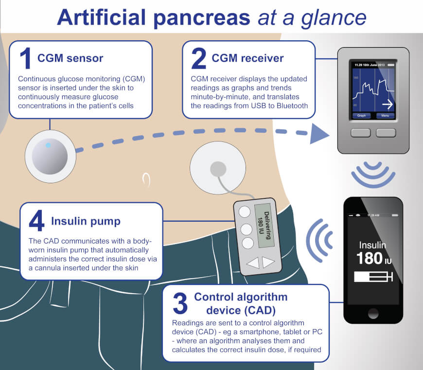
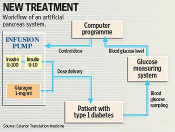

An artificial pancreas is a life-saving medical device system designed to help individuals with type 1 diabetes by automating insulin delivery. It aims to maintain normal blood glucose levels by continuously monitoring glucose and delivering insulin as needed. Historically, insulin therapy began with injections and evolved to insulin pumps. However, these methods required constant human input. The artificial pancreas integrates continuous glucose monitoring (CGM), smart algorithms, and insulin pumps to automate this process. The goal is to mimic the natural glucose-regulating function of a healthy pancreas. By closing the feedback loop between glucose levels and insulin delivery, it reduces the burden on patients and improves overall glycemic control. This system reduces risks of hypo- and hyperglycemia, especially during sleep or exercise. The concept was first explored in the late 20th century, but recent advancements in biosensors, wireless communication, and microcontrollers have made it feasible. Current devices are wearable and offer Bluetooth/Wi-Fi integration to communicate with smartphones and cloud platforms. Research continues to improve response time, safety protocols, and adaptability to meals and activity levels. Artificial pancreas systems are regulated by agencies like the FDA to ensure they meet clinical safety standards. They represent a major step forward in personalized medicine and automated diabetes care. Their accessibility and affordability remain global challenges. Still, they mark a revolution in how diabetes is managed.
A modern artificial pancreas system typically consists of three key components: a continuous glucose monitor (CGM), a control algorithm, and an insulin pump. The CGM measures glucose levels in real-time and sends the data wirelessly to the controller. The control algorithm, often hosted on a smartphone or dedicated device, uses advanced mathematical models to predict future glucose levels. Based on these predictions, it calculates the appropriate insulin dose required to maintain glucose within target range. This calculated dose is then sent to the insulin pump, which delivers insulin through a cannula under the skin. The loop repeats continuously, allowing the system to respond dynamically to changes in glucose levels. More advanced systems can incorporate machine learning to adapt to individual patient needs over time. Some systems also integrate glucagon delivery to counteract low blood sugar episodes. These closed-loop systems work autonomously with minimal user intervention, except for meals or exercise where manual input may still be needed. Safety checks are built in to avoid over-delivery or under-delivery of insulin.
 Artificial pancreas systems are developed under stringent safety standards to ensure reliable and safe insulin delivery. They must comply with international medical device regulations such as ISO 13485 and IEC 60601 standards. The FDA evaluates these systems under its Premarket Approval (PMA) process, requiring clinical trial data for safety and efficacy. Systems are equipped with safety redundancies like alarm systems for hardware malfunctions or extreme glucose levels. Algorithms must pass robustness tests to prevent inappropriate insulin dosing in real-world scenarios. Devices undergo cybersecurity evaluations to safeguard patient data from wireless breaches. Regular firmware updates are recommended for both the controller and insulin pump to patch vulnerabilities. Emergency override features are included for manual control during system faults. Calibration protocols are enforced for CGMs to ensure accurate readings. Patient training programs are necessary before deployment to ensure effective and safe use of the system.
Done by: Sri Tejaswini (RA2311013010005)
Guide: Dr. Muthu P